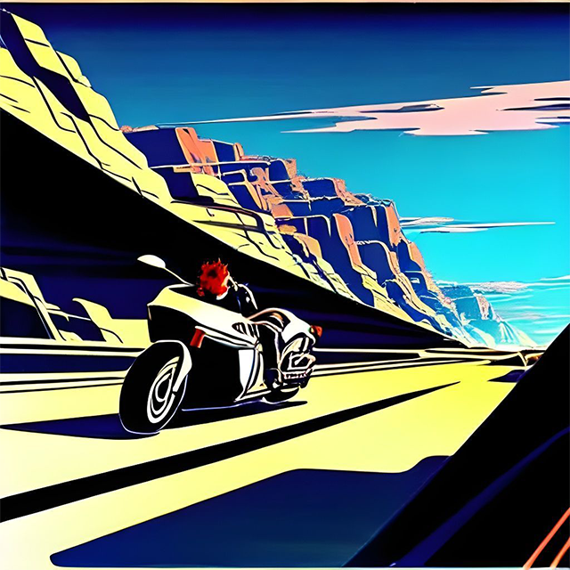

Marcus reached his leg over his motorcycle, ready for the race at Dry Plateau. His hands twitched and his eyes looked forward longingly towards the road. The sound of the engines roared in his ears, filling him with a sense of excitement and adrenaline. He had been waiting for this moment for months, training every day to make sure he was in top form for the race. As the signal to start blared, Marcus gunned his motorcycle and took off, racing down the dusty road. The wind rushed past him, blowing his hair back and making his heart race. He leaned forward, pushing his motorcycle to its limits as he weaved around other racers, trying to gain an advantage. He could feel the heat of the sun beating down on his skin and the sweat trickling down his back, but he didn't let it distract him. Marcus knew that he had to stay focused if he wanted to win this race. He had to anticipate every turn and every obstacle, and react quickly to any unexpected challenges. As the finish line drew closer, Marcus pushed even harder, pouring all of his energy into his motorcycle. He could hear the cheers of the spectators as he approached the finish line, and he knew that he was just seconds away from victory. With one final burst of speed, he crossed the finish line, triumphant. The crowd erupted in cheers, and Marcus let out a whoop of joy as he pulled his motorcycle to a stop.
